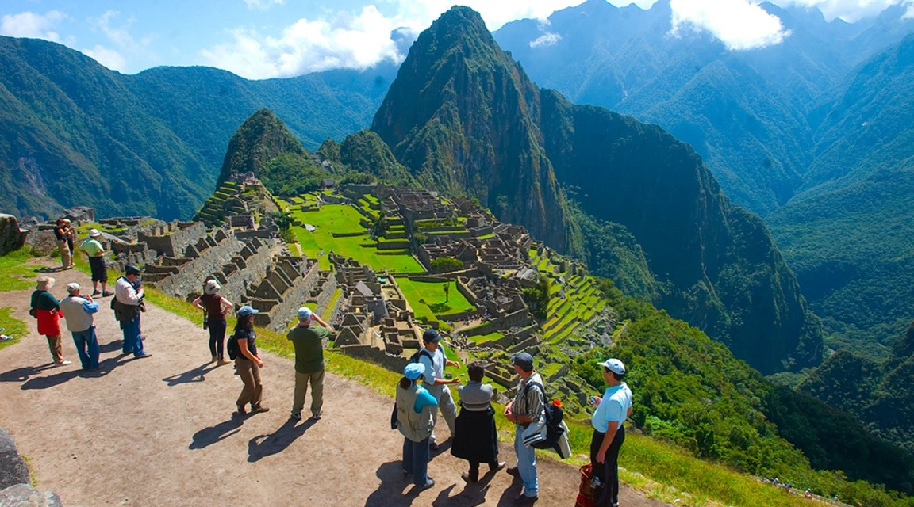
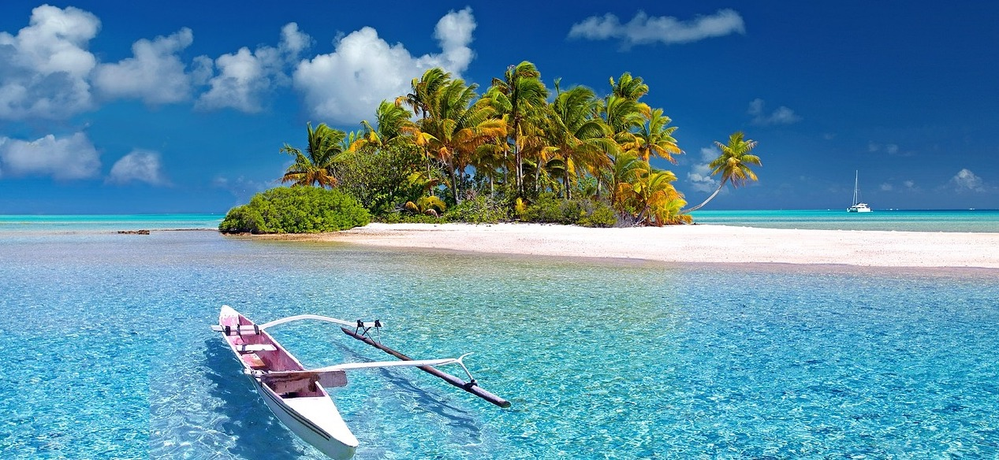
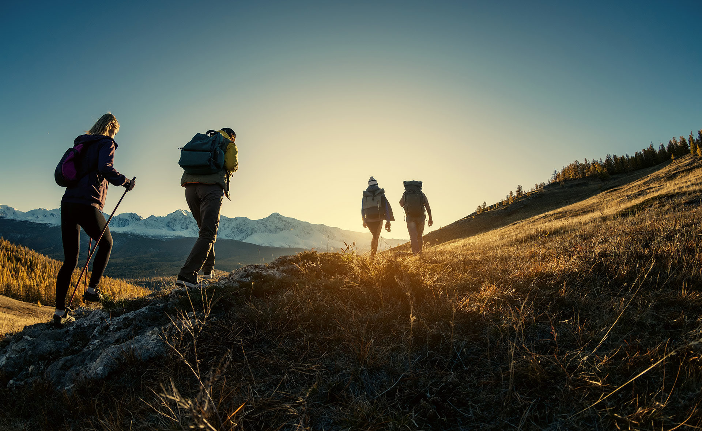
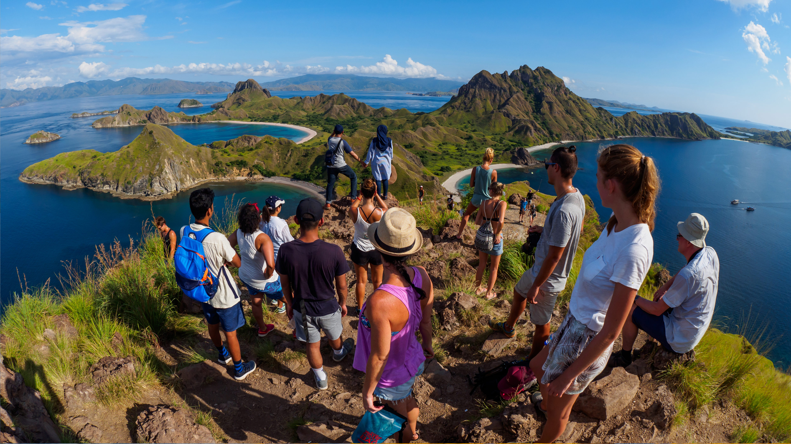
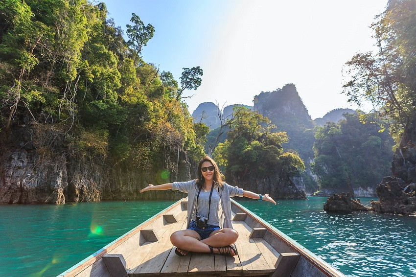
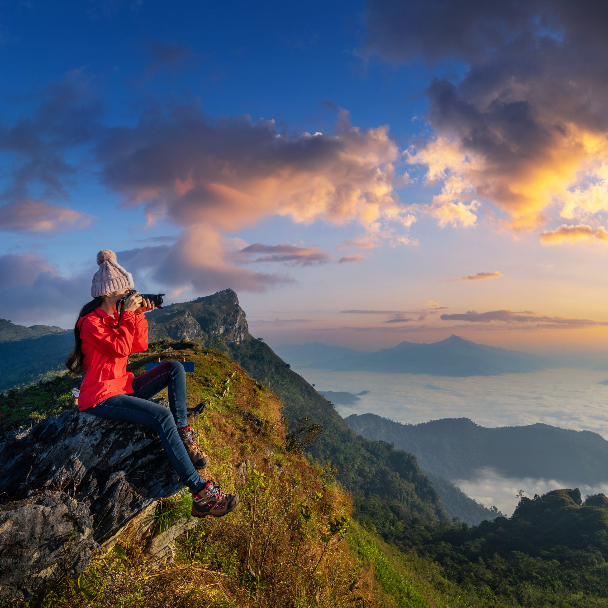
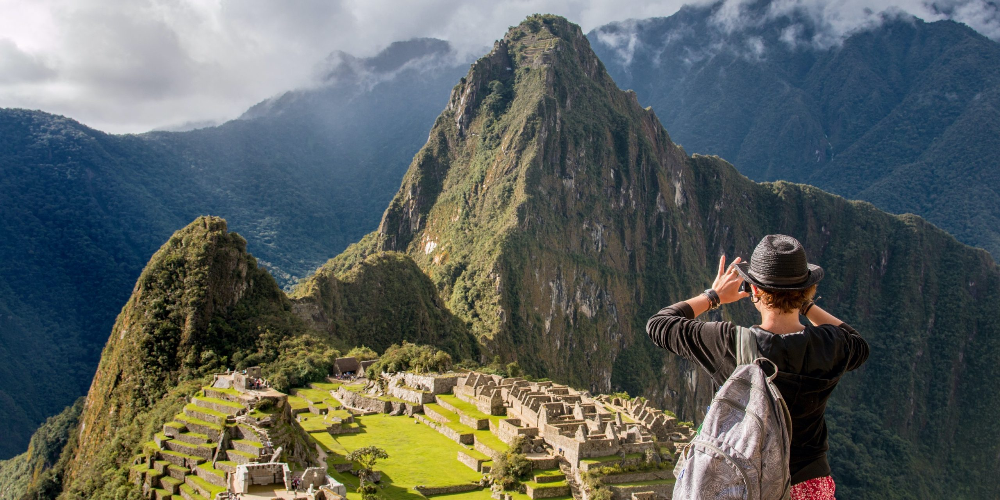

Cultural
Jujuy Colonial
Descubre iglesias, museos y tradiciones en un recorrido patrimonial.

Descubre iglesias, museos y tradiciones en un recorrido patrimonial.

Senderismo entre valles, cascadas y miradores con vistas infinitas.

Relájate en playas doradas con actividades acuáticas premium.

Saborea experiencias culinarias en mercados y restaurantes boutique.

Recorre santuarios históricos y celebra tradiciones profundas.
Galería de momentos y paisajes que te invita a imaginar cada destino.




Comparativa clara de paquetes y destinos para facilitar tu elección de viaje.
| Destino | Duración | Precio | Estilo |
|---|---|---|---|
| Ruta del Vino | 4 días | $320 USD | Gastronómico |
| Valle Encantado | 5 días | $280 USD | Naturaleza |
| Costa Dorada | 3 días | $240 USD | Sol y Playa |
| Caminos Santos | 6 días | $360 USD | Religioso |